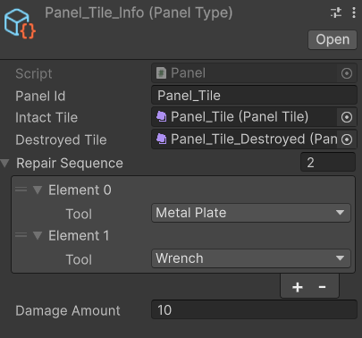
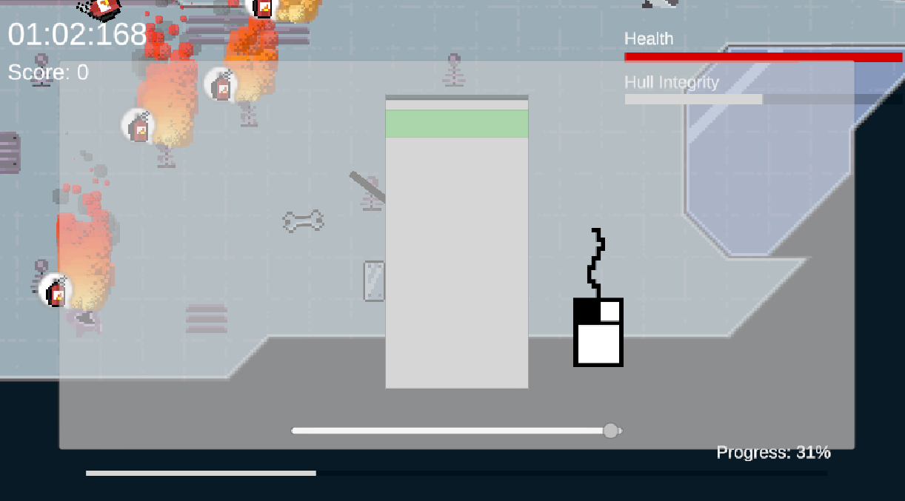
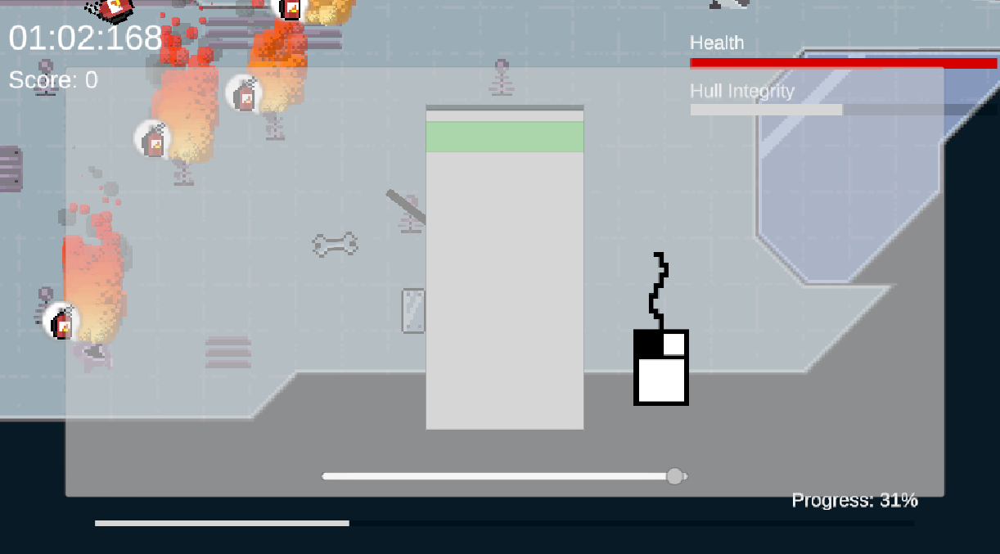

Week 3: First Playable & Modular Components
First Playable & Modular Components
This week, I continued working on integrating the art assets into the game, as well as assisting the programmers with the first playable prototype.
With one of the programmers working on the asteroid spawning system, and the other implementing player movement, I focused on
bringing it all together into a unified loop, complete with art assets and basic UI.
I created a tile system in Unity to allow the designer to easily lay out the ship environment, as well as decide which sequence of tools is required
to fix a given ship component. Its as easy as clicking the + button, and selecting the desired tool from the dropdown menu. You can also
specify how much damage the ship takes when a panel of this type is destroyed, which is also how much health the ship regains upon its successful
repair.

In addition, I create another modular system to control how we will define levels in our game. Using Unity's custom editor feature, I created
a timeline view, allowing our designers to control the various events in our game such as asteroid and alien spawning. They can choose
between wave spawning (all at once) or continuous spawning over a given period, and these can be overlapped to create engaging and dynamic
levels. It's also easily extensible for when we add new environment hazards allowning our designers to work independantly of our programmers
to ensure a streamlined process.
 I also added shell menus, player + ship health, the repairing system with minigames, indicators for off-screen hazards
and tools, as well as additional tool effects such as the fire extinguisher propelling the player and putting out fire, and the metal sheet
reducing damage done to the player.

Next on the list is to refactor this prototype code into something more extensible, and to make it easier for our other programmers to continue
development. We'd also like to have the shop and upgrade system done within the next two weeks. I'll also be responsible for finishing off
some additional assets as we need them, such as additional asteroid types, aliens, miscellaneous hazards, as well as the UI. We've also got a backlog
of things we'd like to change from the playtesting sessions we held, which will be gradually implemented during the refactor process.
I also added shell menus, player + ship health, the repairing system with minigames, indicators for off-screen hazards
and tools, as well as additional tool effects such as the fire extinguisher propelling the player and putting out fire, and the metal sheet
reducing damage done to the player.

Next on the list is to refactor this prototype code into something more extensible, and to make it easier for our other programmers to continue
development. We'd also like to have the shop and upgrade system done within the next two weeks. I'll also be responsible for finishing off
some additional assets as we need them, such as additional asteroid types, aliens, miscellaneous hazards, as well as the UI. We've also got a backlog
of things we'd like to change from the playtesting sessions we held, which will be gradually implemented during the refactor process.